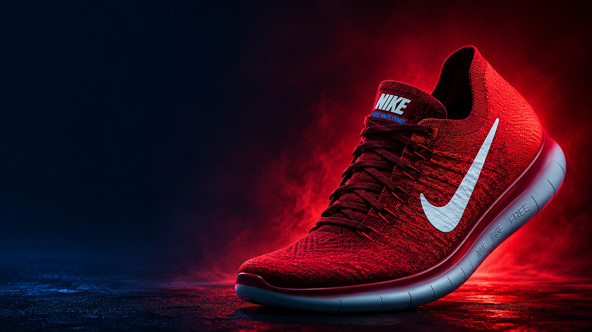

O PASSO ÚNICO conecta pessoas que precisam de calçados específicos a novas possibilidades através da doação, colaboração e reaproveitamento inteligente.

Milhares de pares podem ganhar uma nova história.
Conectando doadores e beneficiários em todo o Brasil.
Projeto preparado para crescer em todo território nacional.
O PASSO ÚNICO simplifica a conexão entre pessoas que possuem calçados específicos e quem realmente precisa deles.
Usuários e colaboradores podem cadastrar calçados específicos disponíveis para doação ou reaproveitamento.
A plataforma cruza informações para facilitar o encontro entre quem precisa e quem deseja ajudar.
Cada novo par entregue representa mais mobilidade, inclusão e novas oportunidades.